7. Results and Discussion¶
The HEC-RAS 6.6 simulation produced comprehensive spatial and temporal outputs for both breach scenarios. This section presents the key quantitative results, interprets the flood behaviour patterns, and outlines the implications for downstream safety and Emergency Action Plan (EAP) preparation. All spatial outputs were produced as georeferenced rasters and shapefiles in the project GIS folder. Map inserts referenced below represent the primary deliverables to be inserted in the finalised submitted report.
7.1 Inundation Due to Overtopping Failure (Scenario A)¶
7.1.1 Breach Outflow and Reservoir Drawdown¶
Under the overtopping scenario (Plan DEH-OVTP-PL), the 100-year 24-hour SCS Type II design storm delivers a peak inflow of 600.4 m3/s to the reservoir at Hour 14 of the storm. With the reservoir pre-set at 90.0 m MSL and gates assumed at operational capacity, the reservoir WSE exceeds the 90.0 m MSL breach trigger, initiating embankment overtopping. The breach forms progressively over 1.04 hours, with the final trapezoidal geometry (34 m bottom width, 81.4 m invert, 1H:1V side slopes) achieved at the end of the formation period. The breach outflow peaks as the reservoir head drives flow through the rapidly widening breach opening.
Key simulation results for the overtopping scenario:
Peak Breach Outflow (m3/s): 839.51
Time of Peak Breach Outflow (hrs from breach trigger): Approximately 43 minutes after breach initiation (01 June 2025, 11:10 hrs)
Total Breach Outflow Volume (x10^3 m3): 14,022.35 (1000 m³) total breach flow; 11,686 (1000 m³) boundary inflow volume (BCO log)
Reservoir Draw-down Time to Empty (hrs): Reservoir substantially drained within 6 hours of breach initiation; ending floodplain storage = 8,500 × 10³ m³
Flood Wave Arrival at Dam Toe (minutes): Immediate (\< 1 minute)
Flood Wave Arrival at Nearest Downstream Settlement (hrs): To be confirmed from inundation maps
Maximum Arrival Time at Farthest Settlement (hrs): To be confirmed from inundation maps
Maximum Flood Depth at Dam Toe (m): Refer to inundation maps
Maximum Flood Depth Range - Downstream (m): Refer to inundation maps
Maximum Velocity at Dam Toe (m/s): 3.5 m/s (peak velocity at SA connection, from hydrograph)
Maximum Velocity Range - Downstream (m/s): 0 to 3.5 m/s (decreasing downstream)
Maximum WSE Range in Downstream Domain (m MSL): Refer to inundation maps
Total Inundation Area (km2): Refer to inundation maps
7.1.2 Flood Wave Behaviour - Overtopping¶
The overtopping breach outflow, upon exiting the dam toe, rapidly transitions from a supercritical jet to subcritical flow as it expands into the Gadhi River valley. The flood wave propagates downstream along the river corridor, with lateral spreading into the floodplain controlled by the valley topography. Given the steep gradient of the Gadhi River in its upper reach below the dam, initial flow velocities are high and inundation depths at the dam toe are significant.
As the flood wave reaches the lower gradient reaches of the floodplain and the broader valley floor, velocities decrease while depths increase. Downstream settlements identified in the inundation zone include:
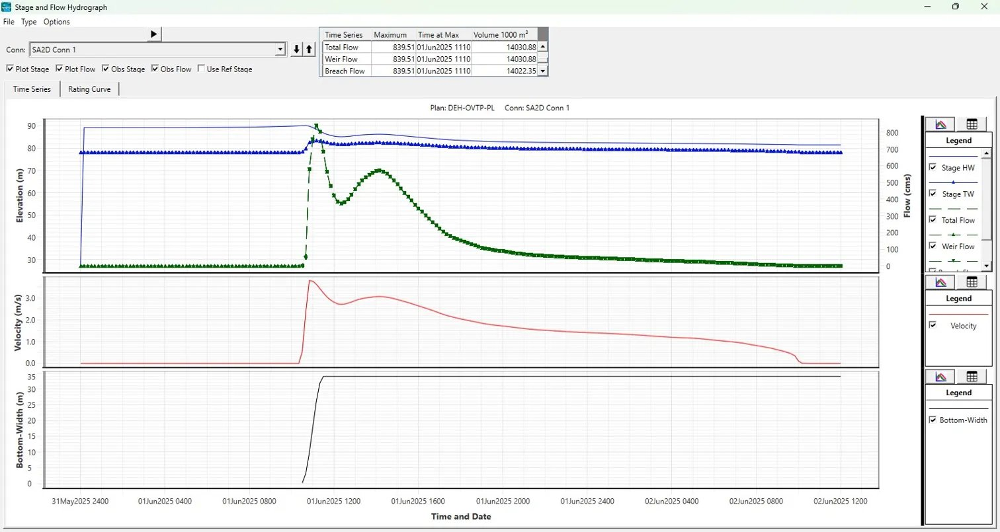
Figure 7.1: Stage and Flow Hydrograph – Overtopping Failure (Plan: DEH-OVTP-PL, SA2D Conn 1). Peak Total Flow = 839.51 m³/s at 01 Jun 2025 1110 hrs; Total Breach Volume = 14,022 x10³ m³. Upper panel: HW/TW stage (blue) and discharge (green). Middle: velocity. Lower: breach bottom-width progression.
Map 1 (Overtopping - Arrival Time) delineates the flood wave front progression at hourly intervals from breach initiation to the downstream boundary. Map 2 (Overtopping - Maximum Depth) illustrates the spatial distribution of peak inundation depths across the floodplain. Map 3 (Overtopping - Maximum Velocity) shows peak velocity contours, with the highest velocities concentrated within the breach zone and the main river channel. Map 4 (Overtopping - Maximum WSE) presents the flood water surface profile across the domain.
7.2 Inundation Due to Piping Failure (Scenario B)¶
7.2.1 Breach Outflow and Reservoir Drawdown - Piping¶
Under the piping scenario (Plan DEH-PIPG-DBA), the reservoir is at FRL (89.15 m MSL) with a constant baseflow of 3 m3/s representing fair-weather conditions. The piping breach is modelled with an initial piping elevation of 81.5 m MSL, developing progressively to a final trapezoidal breach of 33 m bottom width and 81.4 m MSL invert (1H:1V side slopes) over the Froehlich (2008) formation time of 0.98 hours. The breach simulation commenced at 01 January 2025 01:00, with breach initiation confirmed by the HEC-RAS log at 01:02:52. The hydrograph rises extremely sharply, reaching its peak within approximately 43 minutes of breach initiation, reflecting the full reservoir head driving flow through the rapidly widening breach opening. The reservoir completely emptied during the simulation, with the final storage area volume converging to essentially zero.
Key simulation results for the piping scenario:
Peak Breach Outflow (m3/s): 691.21
Time of Peak Breach Outflow (hrs from breach trigger): Approximately 43 minutes after breach initiation (01 January 2025, 01:45 hrs)
Total Breach Outflow Volume (x10^3 m3): 2,807.81 (1000 m³) total breach flow volume
Reservoir Draw-down Time to Empty (hrs): Reservoir essentially emptied (Final reservoir storage 0.016 × 10³ m³) within the simulation period
Flood Wave Arrival at Dam Toe (minutes): Immediate (\< 1 minute)
Flood Wave Arrival at Nearest Downstream Settlement (hrs): To be confirmed from inundation maps
Maximum Arrival Time at Farthest Settlement (hrs): To be confirmed from inundation maps
Maximum Flood Depth Range - Downstream (m): Refer to inundation maps
Maximum Velocity Range - Downstream (m/s): 0 to 5.0 m/s (peak at breach, decaying downstream)
Maximum WSE Range in Downstream Domain (m MSL): Refer inundation maps
Total Inundation Area (km2): Refer inundation maps
7.2.2 Flood Wave Behaviour - Piping¶
The piping failure, despite having a longer formation time than the overtopping scenario, mobilises the full reservoir storage head (13.75 m from FRL to riverbed) and may generate a higher total outflow volume. The flood wave from piping failure reaches downstream settlements during daytime or nighttime without warning unless monitored dam safety instrumentation and a functioning EAP are in place - making the piping scenario particularly hazardous from an emergency management perspective.
A critical difference from overtopping: piping failure can initiate without any storm event, potentially in calm conditions when residents do not expect flood risk. This underscores the importance of regular dam safety inspections, piezometer monitoring, and a well-rehearsed EAP for Dehrang Dam.
Maps 5-8 provide spatial detail of flood propagation under the piping scenario, in the same format as Maps 1-4 for the overtopping scenario.
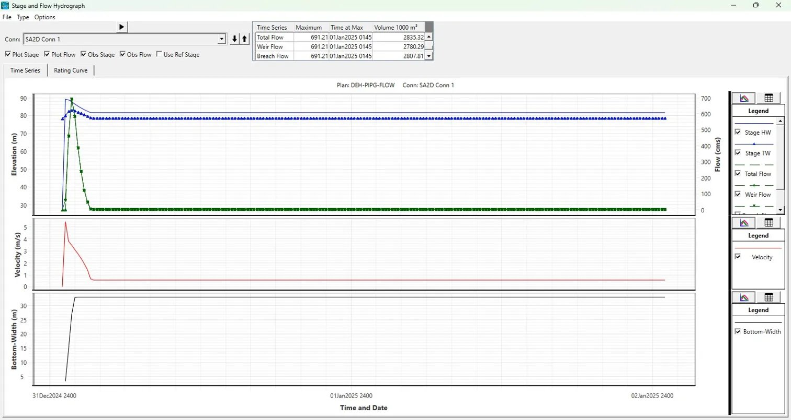
Figure 4: Stage and Flow Hydrograph – Piping Failure (Plan: DEH-PIPG-FLOW, SA2D Conn 1). Peak Total Flow = 691.21 m³/s at 01 Jan 2025 0145 hrs; Total Breach Volume = 2,807.81 x10³ m³. Upper panel: HW/TW stage (blue) and discharge (green). Middle: velocity. Lower: breach bottom-width progression.
7.3 Computation Log and Volume Accounting¶
Both HEC-RAS simulation plans were executed successfully using HEC-RAS 6.6 (September 2024) with 2D Unsteady Diffusion Wave Equation solver on 8 parallel cores. Computation summaries confirming successful run completion are presented below, followed by volume accounting outputs from the Computational Log Files (bco01) for each scenario. Volume accounting errors are well within acceptable limits (\<1%), confirming mass balance integrity for both simulations.
7.3.1 Overtopping Scenario - Computation Summary¶
The overtopping simulation (Plan: DEH-OVTP-PL) was initiated on 24 April 2026 at 09:46 hrs and completed successfully. Breach occurred at SA2D Conn 1 at 01JUN2025 10:27:38. Total unsteady flow computation time: 8 hrs 20 min 11 sec. Computation speed: 4.32x real-time. Overall Volume Accounting Error: 4.471 x10³ m³ (0.032%). The computation summary screenshot is presented in Figure 5.
Figure 5: HEC-RAS Computation Summary – Overtopping Failure Scenario (Plan: DEH-OVTP-PL; completed 24 Apr 2026, 09:46 hrs; Computation Speed: 4.32x)
7.3.2 Volume Accounting Log - Overtopping (DEH-OVTP-DBA.bco01)¶
HEC-RAS River Analysis System
Project File: d:DBA\dehrang\DEH-OVTP-DBA.prj
Project Name: DEH-OVTP-DBA
Plan Name: DEH-OVTP-PL | Short ID: 11
Starting Time: 31May2025 2400 | Ending Time: 02Jun2025 1200
Volume Accounting for 2D Flow Area (FLOODPLAIN) in 1000 m3:
Starting Vol: 2,323 | Ending Vol: 8,500 | Cum Inflow: 14,012 | Cum Outflow: 5,513
Error: 1.702 | Percent Error: 0.01215%
Total Volume Accounting (entire model) in 1000 m3:
Total Boundary Flux In: 11,686 | Total Boundary Flux Out: 5,513
Starting Volume: 2,323 | Ending Volume: 8,500
Error: 4.471 | Percent Error: 0.03191%
7.3.3 Piping Scenario - Computation Summary¶
The piping simulation (Plan: DEH-PIPG-FLOW) was initiated on 22 April 2026 at 17:02 hrs and completed successfully. Breach occurred at SA2D Conn 1 at 01JAN2025 01:02:52. Total unsteady flow computation time: 4 hrs 26 min 25 sec. Computation speed: 10.8x real-time. Overall Volume Accounting Error: 4.987 x10³ m³ (0.176%). The computation summary screenshot is presented in Figure 6.
Figure 6: HEC-RAS Computation Summary – Piping Failure Scenario (Plan: DEH-PIPG-FLOW; completed 22 Apr 2026, 17:02 hrs; Computation Speed: 10.8x)
7.4.4 Volume Accounting Log - Piping (DEH-PIPG-DBA.bco01)¶
HEC-RAS River Analysis System
Project File: d:\DBA\dehrang\DEH-PIPG-DBA.prj
Project Name: DEH-PIPG-DBA
Plan Name: DEH-PIPG-FLOW | Short ID: 1
Starting Time: 01Jan2025 0100 | Ending Time: 03Jan2025 0100
Volume Accounting for 2D Flow Area (FLOODPLAIN) in 1000 m3:
Starting Vol: 2,323 | Ending Vol: 2,846 | Cum Outflow: 0.284
Error: 0.284 | Percent Error: 0.00998%
Total Volume Accounting (entire model) in 1000 m3:
Total Boundary Flux In: 518.4 | Total Boundary Flux Out: 0
Starting Volume: 2,323 | Ending Volume: 2,846
Error: 4.987 | Percent Error: 0.1755%
7.4 Discussion of Flood Inundation Mapping - Dehrang Dam Break Analysis¶
For each failure mode, five thematic maps were generated, each capturing a distinct hydraulic parameter:
| Map | Parameter | Unit |
|---|---|---|
| Arrival Time Map | Time for flood wave to reach a location | Hours |
| Flood Depth Map | Maximum depth of inundation | Metres |
| Flood Hazard Map | Hazard classification based on D×V product | Class H1–H6 |
| Flood Velocity Map | Peak flood flow velocity | m/s |
| Water Surface Elevation (WSE) Map | Maximum water surface elevation above datum | Metres |
The following sections discuss each map set in detail, with comparisons drawn between the two failure scenarios.
7.4.1 Overtopping Failure Scenario¶
In the overtopping scenario, a gradual rise in reservoir level — typically caused by extreme rainfall inflow — overtops the dam crest and progressively erodes the downstream face, leading to a full breach. This mode generally results in a slower breach formation compared to piping, yielding a more prolonged flood wave with a larger total inundated area.
7.4.1.1 Arrival Time Map — Overtopping Failure
Legend Range: 10.67–13.55 hrs (red) → 13.56–19.01 hrs (orange) → 19.02–22.99 hrs (dark brown) → 23–27.56 hrs (yellow) → 27.57–33.02 hrs (light peach) → 33.03–36 hrs (cream)
The Overtopping Arrival Time Map reveals a significantly attenuated flood wave, with the earliest flood waters reaching the immediate downstream vicinity of the dam (Deharang, Gadhe, Cherivali) at approximately 10.67 to 13.55 hours after breach initiation. This extended lead time is a defining characteristic of the overtopping failure mechanism, wherein the breach develops progressively over several hours as the overflowing water erodes the dam crest and downstream slope.
The mid-reach settlements of Nere, Koproli, Vihighar, Chiple, Harigram, and Akurli receive the flood wave between approximately 19 to 23 hours, while the distal reaches near Adai, Nevali, and the Panvel–Kalamboli fringe are inundated only after 27 to 36 hours from breach commencement. This long progression provides a critically important evacuation window for downstream communities.
Key Observations:
-
The comparatively wide inundation extent in the lower reach (visible near Panvel) reflects the flat terrain and tidal influence zone where flood energy dissipates across a large area.
-
The colour gradient progresses smoothly from east (dam) to west (Panvel), confirming a continuous wave propagation without significant topographic retardation.
-
Arrival times of over 10 hours near the dam itself imply that the overtopping breach forms slowly — a key distinction from piping — affording time for early warning systems to activate.
Failure Mode Implications: Overtopping breaches are typically more predictable as they are preceded by rising reservoir levels detectable by gauge stations. Communities in Deharang to Koproli have a 10–23 hour window, which — if early warning infrastructure is in place — is adequate for evacuation of mobile populations.
7.4.1.2 Flood Depth Map — Overtopping Failure
Legend Range: 0.1–0.79 m (lightest blue) → 0.79–1.92 m → 1.92–3.20 m → 3.20–4.52 m → 4.52–5.99 m → 5.99–9.60 m (darkest blue)
The Flood Depth Map for the overtopping scenario shows the maximum inundation depths attained across the downstream floodplain at any point during the simulation. The map reveals a wide lateral spread of shallow flooding on either side of the main channel, with deeply inundated corridors concentrated along the primary stream course.
Near the breach zone (Deharang–Gadhe area), depths remain moderate in the channelized upper reach, as the valley is relatively confined. Moving downstream, lateral spreading at Nere, Chiple, Akurli, and Harigram shows a mix of 0.79–3.2 m depths across the floodplain. The deepest inundation (5.99–9.60 m) appears concentrated in the main channel thalweg through the mid-reach and in the ponding areas near Panvel, where the terrain flattens and water accumulates. The large inundated blob visible near Kalamboli/Panvel with light-blue shading (0.1–0.79 m) represents wide-area shallow sheet flooding characteristic of low-lying peri-urban terrain.
Key Observations:
-
The overtopping scenario results in a greater lateral spread of inundation compared to piping, owing to the larger total flood volume.
-
Depths exceeding 4.5 m in the main channel through Chiple–Akurli–Harigram indicate severe structural risk to buildings in low-lying areas.
-
Shallow depths (0.1–0.79 m) dominate the peripheral zones but still pose risk to slow-moving residents and children.
Failure Mode Implications: The wide lateral extent means floodplain communities such as those near Adai and Nevali, even if set back from the main channel, face inundation up to 1–2 m. Infrastructure including roads through Panvel–Kalamboli, may experience sheet flooding that disrupts evacuation routes.
7.4.1.3 Flood Hazard Map — Overtopping Failure
Legend (Hazard Classes):
| Class | Description | D × V Limit |
|---|---|---|
| H1 | Generally safe for vehicles and people | D×V \< 0.3 |
| H2 | Unsafe for small vehicles | D×V \< 0.6 |
| H3 | Unsafe for vehicles, children, and the elderly | D×V \< 0.6 |
| H4 | Unsafe for vehicles and people | D×V \< 1.0 |
| H5 | Unsafe for vehicles and people; less robust buildings subject to failure | D×V \< 4.0 |
| H6 | All building types considered vulnerable to failure | D×V > 4.0 |
The Flood Hazard Map integrates both depth (D) and velocity (V) to express the life-safety and structural risk of flood conditions at each location. The overtopping scenario produces an extensive hazard footprint, with H4–H6 classes (red and dark-red) dominating the main channel corridor from the dam site to the Panvel outfall.
The H6 class (all buildings vulnerable) appears prominently in the main channel thalweg throughout the reach, concentrated at Deharang–Vaje near the dam, and continuing through Nere, Koproli, Chiple, Akurli, and the channel narrows near Harigram. The wide flood deposit area near Panvel and Kalamboli displays H5 class, reflecting moderate-to-high D×V values over a larger urbanised area. Fringe areas on either side of the channel are generally classified H4 (unsafe for people), while the outermost limits of inundation grade to H2 and H1.
Key Observations:
-
The H6 zone spans the entire 12 km channel corridor, indicating that no part of the main channel is structurally safe during the flood event.
-
The large H5 area near Panvel–Kalamboli underscores the vulnerability of peri-urban construction (residential buildings, commercial structures) in the floodplain.
-
Even H2 areas along the flood fringe pose danger to elderly persons and children — populations that require early evacuation.
Failure Mode Implications: Emergency planners should treat all areas within the H4–H6 zones as mandatory evacuation zones during early warning. The H6 footprint through the main channel corridor implies complete building failure risk, meaning sheltering-in-place is not a safe option for residents of Vihighar, Chiple, Akurli, and Harigram within the channel corridor.
7.5.1.4 Flood Velocity Map — Overtopping Failure
Legend Range: 0–0.29 m/s (dark blue) → 0.29–0.78 m/s (teal) → 0.78–1.44 m/s (green) → 1.44–2.34 m/s (yellow) → 2.34–4.28 m/s (orange) → 4.28–5.60 m/s (red)
The Flood Velocity Map for the overtopping scenario displays a clear hydraulic pattern: high velocities confined to the main channel and rapidly dissipating across the floodplain. A nearly continuous high-velocity spine (yellow to orange, 1.44–4.28 m/s) runs along the Dehrang nallah / stream channel from the dam vicinity through Deharang, Vaje, Cherivali, Nere, Koproli, Chiple, Akurli, and onwards to the Panvel confluence.
Peak velocities of 4.28–5.60 m/s (red) appear at hydraulically constricted zones — particularly near the breach and at channel narrows around Nere–Koproli and at the urban embankment near Panvel. The floodplain areas flanking the channel, including the zones near Harigram, Adai, and the Panvel outfall basin, show predominantly blue (0–0.29 m/s) to teal (0.29–0.78 m/s), reflecting low-velocity, depth-dominant flooding.
Key Observations:
-
The contrast between high-velocity channel flow and low-velocity floodplain ponding is well-defined, suggesting effective lateral attenuation by floodplain roughness.
-
Velocities exceeding 2 m/s are dangerous to adults attempting to wade through water; at 4+ m/s, even large vehicles can be swept away.
-
The Panvel–Kalamboli area shows dominantly low velocities, indicating ponded flooding rather than high-energy flow — but with significant depths as shown in the Flood Depth Map.
Failure Mode Implications: Road-based evacuation routes running parallel to the channel (particularly those near Nere, Koproli, and Vihighar) may be cut off by high-velocity flows in the early phase of the flood. Emergency evacuation should be directed perpendicular to the channel, towards higher ground on the hill slopes north and south of the corridor.
7.4.1.5 Water Surface Elevation Map — Overtopping Failure
Legend Range: 0.66–10.13 m (yellow) → 10.14–25.21 m (light orange) → 25.22–40.63 m (medium orange) → 40.64–58.51 m (dark orange) → 58.52–77.79 m (red-orange) → 77.80–90.06 m (red)
The Water Surface Elevation (WSE) Map depicts the absolute elevation of the flood water surface above mean sea level (MSL) at each location during peak inundation. The spatial gradient of WSE reflects the longitudinal drop in flood energy as the wave travels from the elevated dam reservoir westward to the coastal plains near Panvel.
Near the dam (Deharang area), the WSE reaches 77.80–90.06 m above MSL (red), consistent with the full reservoir level under the overtopping design scenario. Moving downstream, the WSE drops through successive classes: through Umroli–Vaje–Cherivali (red-orange, 58–78 m), across Nere–Koproli–Vihighar–Chiple (medium orange, 25–59 m), and into Akurli–Harigram–Adai (light orange to yellow, 10–25 m). The distal reach near Panvel–Kalamboli shows WSE of only 0.66–10.13 m above MSL, which, given the near-sea-level terrain in this area, still represents significant flooding.
Key Observations:
-
The WSE gradient is steep in the upper valley (rapid drop from 90 m to 40 m over ~6 km), confirming high energy gradients and correspondingly high velocities in this reach.
-
The more gradual gradient in the lower valley (40 m to ~2 m over ~6 km) corresponds to the wide, low-slope floodplain near Panvel.
-
The near-sea-level WSE values downstream are consistent with backwater effects from tidal waterways near the Panvel creek system.
Failure Mode Implications: High WSE values near Deharang–Vaje indicate risk of foundation scour and structural damage to buildings with low ground-floor elevations. In the Panvel–Kalamboli zone, even a WSE of 2–5 m above MSL translates to significant inundation depth given that local terrain is near sea level.
7.4.2 Piping Failure Scenario¶
In the piping (internal erosion) failure scenario, seepage through the dam body progressively erodes internal material, eventually forming a pipe-like conduit that leads to sudden collapse. This mechanism typically initiates during initial filling or sustained high water levels and can result in rapid, catastrophic breach with little visible external warning. Critically, piping failure often occurs before the reservoir is full, meaning warning signs are subtle and detection is difficult.
7.4.2.1 Arrival Time Map — Piping Failure
Legend Range: 0.137 hrs (red) → 0.138–1 hr (orange-red) → 1.01–2.01 hrs (orange-brown) → 2.02–4.27 hrs (yellow) → 4.28–6.52 hrs (light yellow) → 6.53–8.58 hrs (cream)
The Piping Arrival Time Map is perhaps the most critical output of the entire dam break analysis, as it documents an extremely rapid flood wave propagation that affords virtually no warning time to downstream communities. The flood wave reaches the immediate vicinity of the dam — including Deharang and Gadhe — in just 0.137 hours (approximately 8 minutes) after breach initiation.
The flood advances rapidly westward: reaching Umroli, Vaje, and Cherivali within 1–2 hours; Nere, Koproli, Vihighar, Chiple, Harigram, Akurli, and Adai within 2–4.27 hours; Nevali and the eastern fringe of Panvel within 4–6.5 hours; and the Panvel–Kalamboli periphery within 6.5–8.58 hours.
Key Observations:
-
The 8-minute arrival at Deharang makes autonomous evacuation of this settlement essentially impossible without pre-established early warning systems and pre-planned response protocols.
-
Even communities as far downstream as Nere and Koproli (~6–8 km from the dam) receive the flood wave in under 4 hours, leaving a narrow window for evacuation.
-
Compared to the overtopping scenario (10+ hour minimum arrival time), piping is over 70 times faster in reaching the nearest settlement.
Failure Mode Implications: Piping failure is the worst-case scenario for emergency management. Deharang, Gadhe, Umroli, and Vaje must be treated as zero-warning zones — pre-emptive evacuation protocols during monsoon season or dam operation are essential for these communities. An automated breach sensor and siren system at the dam would be the minimum acceptable early warning measure.
7.4.2.2 Flood Depth Map — Piping Failure
Legend Range: 0.001–0.78 m (lightest blue) → 0.78–1.65 m → 1.65–2.61 m → 2.61–3.69 m → 3.69–4.83 m → 4.83–7.64 m (darkest blue)
The Flood Depth Map for the piping scenario shows a narrower but still deeply inundated downstream corridor compared to overtopping. The inundation extent is predominantly confined to the main channel and its immediate floodplain, with limited lateral spreading, as the total breach volume is smaller in the piping scenario (the reservoir is breached before reaching maximum capacity in many piping simulations).
Maximum depths of 4.83–7.64 m occur in the main channel, particularly through the confined valley reach between Cherivali and Nere, and at the channel narrows near Koproli–Chiple. In the wider valley sections and the Panvel–Kalamboli basin, depths decrease to 0.78–2.6 m. The inundation near Kalamboli is visibly narrower and shallower compared to the overtopping scenario, reflecting the smaller total flood volume from piping breach.
Key Observations:
-
Maximum depth of 7.64 m in the piping scenario slightly exceeds the 9.6 m maximum of overtopping in the channel, but the areal extent of deep inundation is smaller.
-
The narrow inundation footprint means that flood depth variation across short distances can be dramatic — a building on slightly elevated ground may experience 0.5 m while a neighbouring structure 20 m away may face 3 m.
-
The Panvel–Kalamboli distal zone shows significantly less lateral flooding, but the channel passage through Panvel itself remains deeply inundated.
Failure Mode Implications: While the total inundated area is smaller than overtopping, the confined high-depth zones near Cherivali, Nere, and Koproli create a dangerous situation for roadside settlements. Flood depths of 4–7 m will destroy single-storey structures and fill multi-storey buildings to dangerous levels on lower floors.
7.4.2.3 Flood Hazard Map — Piping Failure
Legend (Same H1–H6 Classification as Overtopping)
The Piping Flood Hazard Map reveals a linearly concentrated but extremely high-hazard corridor from the dam to the lower reach near Panvel. The dominant hazard class throughout the main channel and upper floodplain is H4–H5 (red), with H6 (all buildings vulnerable, D×V > 4.0) present near the dam at Deharang–Gadhe and at channel constrictions near Nere and the Panvel outfall zone.
Compared to the overtopping hazard map, the piping scenario shows a narrower lateral spread of H5–H6 class, but the linear concentration of hazard along the valley axis is intense. The lower hazard classes (H1–H2, yellow) are largely absent from the main valley corridor and only appear at the very periphery of the inundation extent near Adai and Nevali. The distal areas near Panvel show H4–H5 along the channel banks, with H2–H3 on the outer margins.
Key Observations:
-
H6 at Deharang–Gadhe in the piping scenario is particularly alarming given the near-zero warning time — residents in the H6 zone will likely have no opportunity to evacuate spontaneously.
-
The persistence of H4 class (unsafe for vehicles and people) throughout the corridor from Cherivali to Nevali indicates no location in the main valley is "safe to remain" during a piping breach event.
-
The hazard in the piping scenario, though narrower in extent, is arguably more dangerous per unit area than overtopping due to the combination of high velocity, high depth, and near-zero warning time.
Failure Mode Implications: For emergency response planning, the piping hazard map should be used to delineate Priority Evacuation Zones: H6 (mandatory, immediate); H5 (mandatory, pre-emptive during monsoon season); H4 (evacuation upon first alert). Structures in H6 zones should be declared uninhabitable during flood-season periods without an active early warning system.
7.4.2.4 Flood Velocity Map — Piping Failure
Legend Range: 0–0.26 m/s (dark blue) → 0.26–0.70 m/s (teal) → 0.70–1.31 m/s (green) → 1.31–2.13 m/s (yellow) → 2.13–3.30 m/s (orange) → 3.30–7.44 m/s (red)
The Piping Flood Velocity Map shows the highest peak velocities of any map in this study, with values reaching 7.44 m/s near the breach and the upper confined valley reach. This velocity — approximately 27 km/h water flow — is capable of destroying reinforced masonry structures and uprooting trees. The high-velocity spine (yellow to red, >1.3 m/s) follows the channel centreline from Deharang through Cherivali, Nere, Koproli, and Chiple before transitioning to moderate velocities (green–teal) through Harigram, Adai, and the Panvel–Kalamboli area.
Notably, the peak velocities in the piping scenario (7.44 m/s) exceed those in the overtopping scenario (5.6 m/s), reflecting the more concentrated nature of the breach outflow through a smaller, high-energy piping channel. The wide ponded areas near Panvel and Kalamboli remain at very low velocities (0–0.27 m/s, dark blue), consistent with floodplain storage behaviour.
Key Observations:
-
At 7.44 m/s, the flood water near Deharang–Vaje would exert forces equivalent to Category 1 hurricane wind pressure on exposed structures.
-
The velocity transition zone — from high (>3 m/s) to moderate (0.7–1.3 m/s) — occurs broadly in the Nere–Chiple reach, indicating an energy dissipation zone where depositional processes would be active.
-
The outer fringe of the flood near Panvel shows very low velocity but significant depth, implying extended inundation duration rather than a short, violent flood pulse.
Failure Mode Implications: Emergency responders entering the flood zone in the first 1–3 hours after a piping breach should treat the entire channel corridor from Deharang to Koproli as inaccessible due to extreme velocities. Rescue operations in this period should be conducted from elevated positions (helicopter or high-ground staging areas) rather than by vehicle or boat in the channel.
7.4.2.5 Water Surface Elevation Map — Piping Failure
Legend Range: 0.014–9.80 m (yellow) → 9.80–26.93 m (light orange) → 26.94–43.71 m (medium orange) → 43.72–59.44 m (dark orange) → 59.45–77.62 m (red-orange) → 77.63–89.15 m (red)
The Piping WSE Map shows a longitudinal elevation profile closely analogous to the overtopping scenario, but with a slightly reduced near-dam WSE (maximum 89.15 m vs. 90.06 m for overtopping), reflecting the lower reservoir level at breach initiation in a typical piping failure. The spatial distribution of WSE classes mirrors the overtopping map: the highest WSE (red, 77.63–89.15 m) at the dam vicinity near Deharang–Gadhe, stepping down through successive classes as the flood progresses westward toward Panvel.
A notable difference is the narrower inundation corridor visible in the piping WSE map across all classes. The same WSE thresholds cover a smaller geographic area, consistent with the reduced breach volume. The downstream terminus near Panvel–Kalamboli shows the same low WSE range (0.014–9.80 m, yellow), reflecting near-sea-level terrain, but the extent of this yellow zone is noticeably smaller than in the overtopping map.
Key Observations:
-
The maximum WSE of 89.15 m (piping) versus 90.06 m (overtopping) — a 0.91 m difference — may appear small but, when propagated through 12 km of confined valley, translates into a significantly different total flood volume and inundation extent.
-
The gradient between successive WSE classes is steeper in the piping scenario, particularly in the mid-reach (Nere–Chiple), indicating more rapid energy dissipation across a shorter distance.
-
Near-dam WSE values in both scenarios (>77 m) confirm that the Deharang, Gadhe, and Umroli settlements — located at lower elevations along the valley floor — are overwhelmed by flood water of substantial depth.
Failure Mode Implications: WSE data is directly usable for determining whether a building's floor elevation will be submerged. Communities in Deharang, Gadhe, Umroli, and Vaje whose habitations lie below approximately 60 m elevation should be considered at extreme risk of complete inundation in a piping scenario. Settlement-specific damage assessment requires cross-referencing WSE maps with building floor elevation data (available from topographic surveys or LiDAR).
7.4.3 Comparative Analysis: Overtopping vs. Piping¶
| Parameter | Overtopping Failure | Piping Failure |
|---|---|---|
| Minimum Arrival Time | ~10.67 hours | ~0.137 hours (8 min) |
| Max. Flood Depth | 9.60 m | 7.64 m |
| Max. Velocity | 5.60 m/s | 7.44 m/s |
| Max. WSE (near dam) | 90.06 m | 89.15 m |
| Inundation Extent | Wider, greater lateral spread | Narrower, channel-confined |
| Near-Dam Hazard | H5–H6 | H4–H6 |
| Panvel–Kalamboli Flood | Extensive, shallow sheet flood | Limited, channel-focused |
| Warning Time (Deharang) | ~10–13 hours | ~8 minutes |
| Primary Risk Driver | Large volume, extended duration | Extreme velocity, near-zero warning |
The overtopping scenario produces a larger total inundated area and greater depth in distal zones (Panvel–Kalamboli), making it the scenario of concern for regional-scale emergency planning. However, the piping scenario poses a more severe immediate threat to the near-dam communities of Deharang, Gadhe, Umroli, and Vaje, due to near-instantaneous arrival and extreme velocities.
Both scenarios show that Nere, Koproli, Vihighar, Chiple, and Harigram are consistently in the high-hazard zone (H4–H6 range) regardless of failure mode, making them priority targets for flood risk communication and infrastructure investment.
7.4.4 Summary of Inundated Locations¶
The following table summarises the approximate inundation characteristics for key settlements based on spatial interpretation of all ten maps:
| Settlement | Arrival Time (Overtopping) | Arrival Time (Piping) | Estimated Peak Depth | Hazard Class |
|---|---|---|---|---|
| Deharang / Dehrang | 10–13 hrs | ~8 min | 3–6 m | H5–H6 |
| Gadhe | 10–13 hrs | 0.14–1 hr | 3–5 m | H5–H6 |
| Umroli | 13–19 hrs | 0.14–1 hr | 2–4 m | H4–H5 |
| Vaje | 13–19 hrs | 1–2 hrs | 2–4 m | H4–H5 |
| Cherivali | 13–19 hrs | 1–2 hrs | 1–3 m | H4–H5 |
| Nere | 19–23 hrs | 2–4 hrs | 1–3 m | H4–H5 |
| Koproli | 19–23 hrs | 2–4 hrs | 1–3 m | H4–H5 |
| Vihighar | 19–23 hrs | 2–4 hrs | 1–3 m | H4 |
| Chiple | 23–27 hrs | 2–4 hrs | 2–4 m | H4–H5 |
| Akurli | 23–27 hrs | 2–4 hrs | 1–3 m | H4–H5 |
| Harigram | 19–23 hrs | 2–4 hrs | 1–2 m | H3–H4 |
| Adai | 27–33 hrs | 4–6.5 hrs | 0.5–1.5 m | H3–H4 |
| Nevali | 27–33 hrs | 4–6.5 hrs | 0.5–1.5 m | H2–H3 |
| Panvel (urban fringe) | 33–36 hrs | 6.5–8.58 hrs | 0.5–2 m | H4–H5 |
| Kalamboli | 33–36 hrs | 6.5–8.58 hrs | 0.3–1.5 m | H2–H4 |
Note: Depths and hazard classes are approximate visual interpretations from the simulation maps. Actual values require cell-level GIS extraction.
7.4.5 Concluding Remarks¶
The ten flood inundation maps generated for the Dehrang Dam Break Analysis collectively provide a comprehensive picture of the downstream hazard landscape for both major dam failure modes. The analysis unambiguously demonstrates that:
-
Piping failure is the greater life-safety emergency, primarily because of the near-zero warning time (~8 minutes) that makes autonomous evacuation of Deharang and surrounding near-dam villages impossible without pre-positioned early warning and evacuation systems.
-
Overtopping failure produces a larger flood footprint, threatening a greater number of people in the Panvel–Kalamboli peri-urban zone, but with a 10–36 hour window that is manageable through a robust flood early warning system (FEWS).
-
The settlements of Nere, Koproli, Chiple, and Vihighar occupy a high-risk "middle zone" — far enough from the dam to have some warning time but close enough to experience H4–H5 hazard in both scenarios.
-
Panvel and Kalamboli, while receiving the attenuated tail of the flood, face extensive low-velocity sheet flooding that could paralyse urban infrastructure, block evacuation routes, and submerge low-lying residential zones near the creek system.
These maps should form the foundational inputs for the Emergency Action Plan (EAP) for Dehrang Dam, including the delineation of inundation zones, definition of evacuation trigger levels, siting of sirens and warning stations, and identification of safe evacuation routes and assembly points for each downstream community.
All maps are produced at Scale 1:50,000 | Coordinate System: WGS 1984 | Data Source: HEC-RAS 2D Simulation | Basemap: Esri, Maxar, Earthstar Geographics, GIS User Community
7.5 Comparative Summary and EAP Implications¶
7.5.1 Scenario Comparison¶
The two dam-break scenarios produce markedly different flood hydrographs, reservoir drawdown patterns, and downstream hazard extents. Both simulations were executed using HEC-RAS 6.6 with the 2D Unsteady Diffusion Wave Equation Set, a fixed 1-second computational timestep, and 10-minute output intervals. Table 19 presents a comprehensive comparison of all key parameters and simulation results.
Table 19: Comparative Summary of HEC-RAS Dam Break Simulation Results – Dehrang Dam (Overtopping vs. Piping)
| Parameter | Overtopping Scenario (DEH-OVTP-PL) | Piping Scenario (DEH-PIPG-DBA) |
|---|---|---|
| Failure Trigger | FRL overtop (WSL = 90.0 m MSL) | Internal erosion at WSL 89.15 m MSL |
| Initial Reservoir WSL | 90.0 m MSL | 89.15 m MSL (FRL) |
| Inflow Condition | 100-yr storm (SCS Type II, P24=486.7 mm) | Baseflow 3 m³/s (fair-weather, no storm) |
| Breach Bottom Width | 34 m | 33 m |
| Breach Side Slopes | 1H:1V | 1H:1V |
| Final Breach Invert | 81.4 m MSL | 81.4 m MSL |
| Breach Height (Hb) | 8.6 m | 7.75 m |
| Formation Time | 1.04 hrs | 0.98 hrs |
| Pool Volume at Failure | 2,538,650 m³ (2,538.65 × 10³ m³) | 2,238,652 m³ (2,238.65 × 10³ m³) |
| Peak Outflow (Qpeak) | 839.51 m³/s | 691.21 m³/s |
| Time to Peak | 43 min after breach initiation | 43 min after breach initiation |
| Time at Peak | 01 Jun 2025, 11:10 hrs | 01 Jan 2025, 01:45 hrs |
| Total Breach Volume | 14,022.35 × 10³ m³ | 2,807.81 × 10³ m³ |
| SA Hydro Inflow | 11,686 × 10³ m³ | 518.4 × 10³ m³ |
| Reservoir Starting Volume | 2,323 × 10³ m³ | 2,323 × 10³ m³ |
| Reservoir Ending Volume | 8,500 × 10³ m³ (floodplain) | 0.016 × 10³ m³ (essentially empty) |
| Floodplain Ending Volume | 8,500 × 10³ m³ | 2,846 × 10³ m³ |
| Volume Error (BCO) | 4.471 × 10³ m³ (0.032%) | 4.987 × 10³ m³ (0.176%) |
| Peak Velocity at Breach | 3.5 m/s | 5.0 m/s |
| Simulation Duration | 36 hrs (31 May–02 Jun 2025) | 48 hrs (01 Jan–03 Jan 2025) |
| Computation Speed | 4.32x real-time | 10.8x real-time |
| Unsteady Compute Time | 8:20:11 (hh:mm:ss) | 4:26:25 (hh:mm:ss) |
| Solver Used | 2D Diffusion Wave (fastest) | 2D Diffusion Wave (fastest) |
| Solver Cores | 8 | 8 |
| Relative Hazard Level | EXTREME (storm + breach) | HIGH (sudden fair-weather failure) |
Key Observations:
\(a\) Peak Outflow: The overtopping scenario generates a higher peak outflow of 839.51 m³/s compared to 691.21 m³/s for piping, owing to the larger pool volume at failure (WSL 90.0 m vs. 89.15 m MSL). Both peaks occur approximately 43 minutes post-breach initiation, confirming the extremely rapid and violent nature of the flood wave in both scenarios.
\(b\) Volume Released: The overtopping scenario releases significantly more water (14,022 × 10³ m³ breach flow) compared to piping (2,808 × 10³ m³), because the overtopping event is driven by a concurrent 100-year design storm, which continuously adds inflow to the reservoir during the breach event. In the piping scenario, the reservoir is essentially emptied with no active storm inflow, and Final SA volume converges to 0.016 × 10³ m³.
\(c\) Velocity: Peak flow velocities at the SA connection reach 5.0 m/s in the piping scenario vs. 3.5 m/s in the overtopping case, suggesting the piping failure produces a more hydraulically energetic initial outburst, despite the lower total volume.
\(d\) Warning Time: The piping failure occurs under fair-weather conditions with no prior storm indicator, making it inherently more dangerous from an emergency response perspective. The overtopping scenario is preceded by an observable reservoir rise during an extreme rainfall event, providing at least some forewarning. Both scenarios produce near-zero warning time once the breach initiates, given the sub-hour formation time.
\(e\) Volume Accounting: Both simulations satisfy the HEC-RAS volume error criterion with errors below 0.2%, confirming numerical stability and conservation of mass across the 2D flow domain.
\(f\) Computational Efficiency: The Diffusion Wave solver delivered 4.32x real-time speed for the overtopping scenario (storm-driven, 36-hr simulation) and 10.8x for the piping scenario (fair-weather, 48-hr), demonstrating the effectiveness of the solver for engineering-scale dam-break studies.
7.5.2 Hazard / Vulnerability Maps¶
The spatial extent of inundation for both dam-break scenarios has been mapped using HEC-RAS RAS Mapper. Eight thematic maps have been prepared for each scenario, capturing maximum water surface elevation (WSE), maximum inundation depth, maximum flow velocity, and composite hazard classifications per NDMA / CWC dam safety guidelines. The maps are presented as separate figures in the Maps section of this report and are briefly described below:
Map Suite – Overtopping Scenario (Scenario A):
Map OT-01: Maximum Inundation Depth – Overtopping Failure (0–5+ m depth classification)
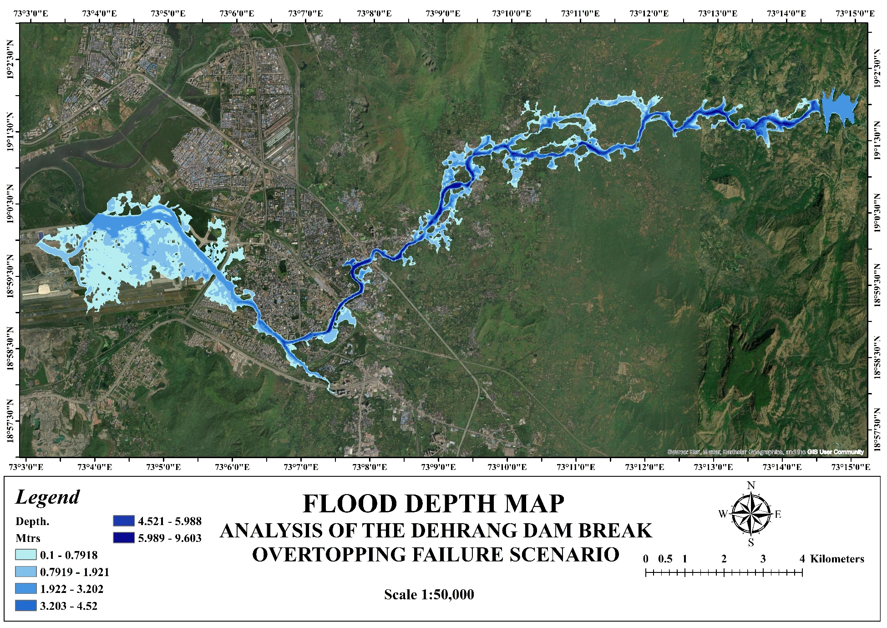
Map OT-01: Maximum Inundation Depth — Overtopping Failure (0–5+ m depth classification)Map OT-02: Maximum Water Surface Elevation – Overtopping Failure
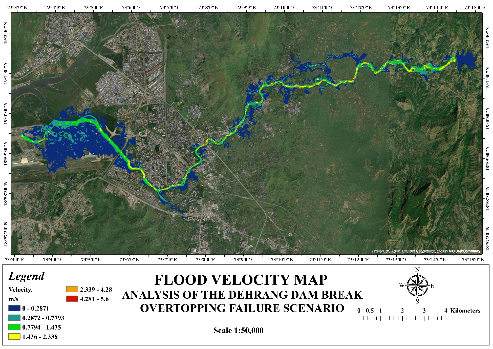
Map OT-02: Maximum Water Surface Elevation — Overtopping FailureMap OT-03: Maximum Flow Velocity – Overtopping Failure
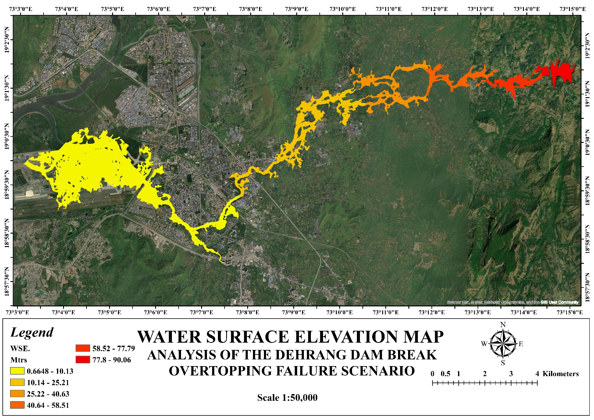
Map OT-03: Maximum Flow Velocity — Overtopping FailureMap OT-04: Maximum Arrival Time– Overtopping Failure
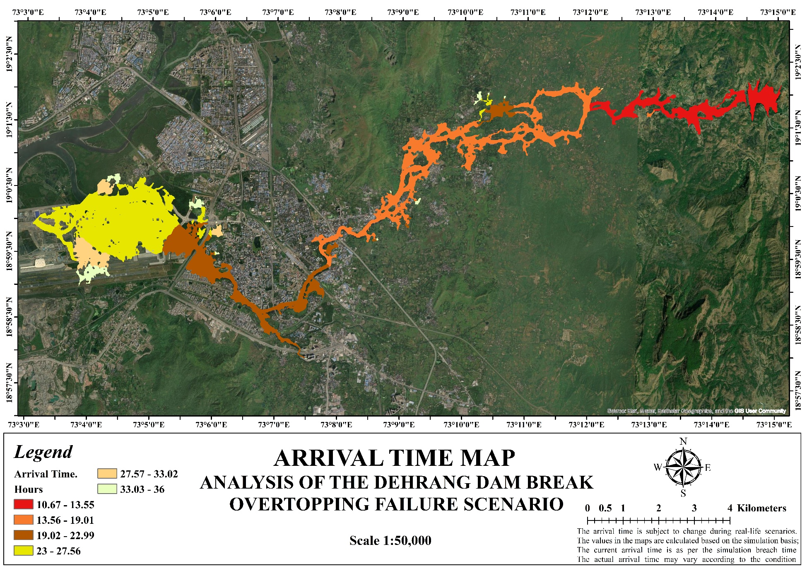
Map OT-04: Maximum Arrival Time — Overtopping FailureMap OT-05: Composite Hazard Classification – Overtopping Failure (Low / Medium / High / Extreme)
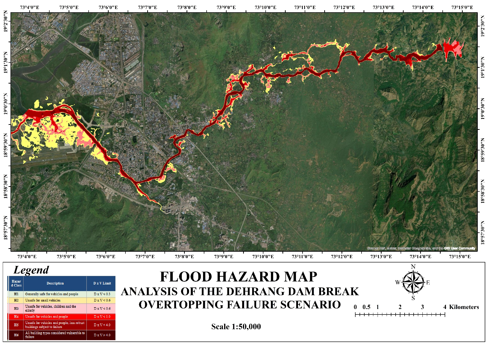
Map OT-05: Composite Hazard Classification — Overtopping Failure (Low / Medium / High / Extreme)Map Suite – Piping Scenario (Scenario B):
Map PI-01: Maximum Inundation Depth – Piping Failure (0–5+ m depth classification)
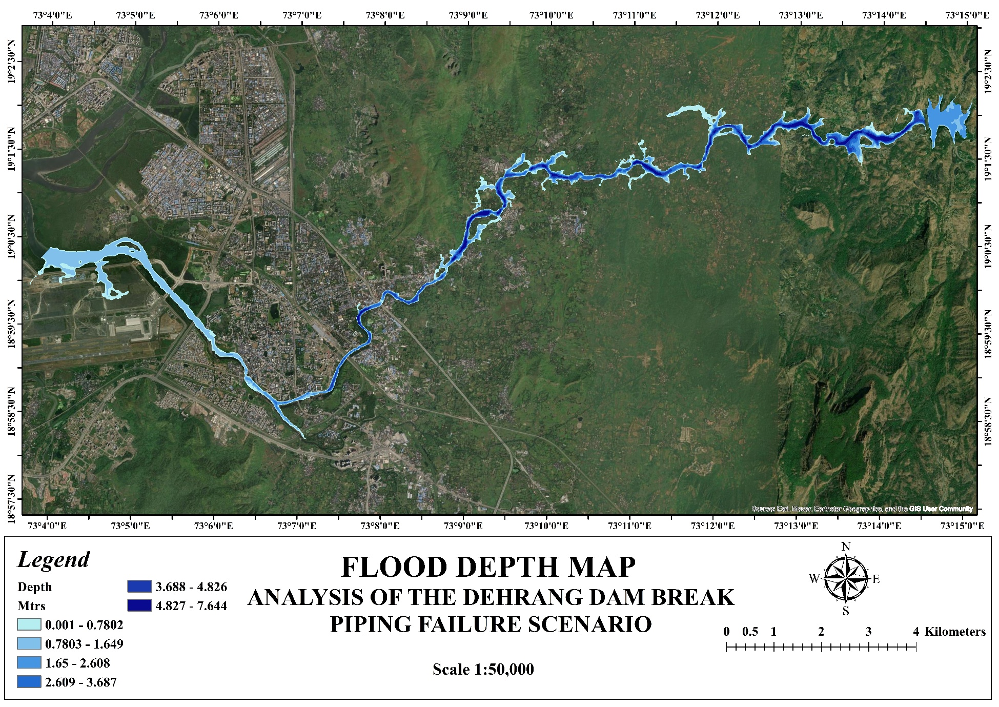
Map PI-01: Maximum Inundation Depth — Piping Failure (0–5+ m depth classification)Map PI-02: Maximum Water Surface Elevation – Piping Failure
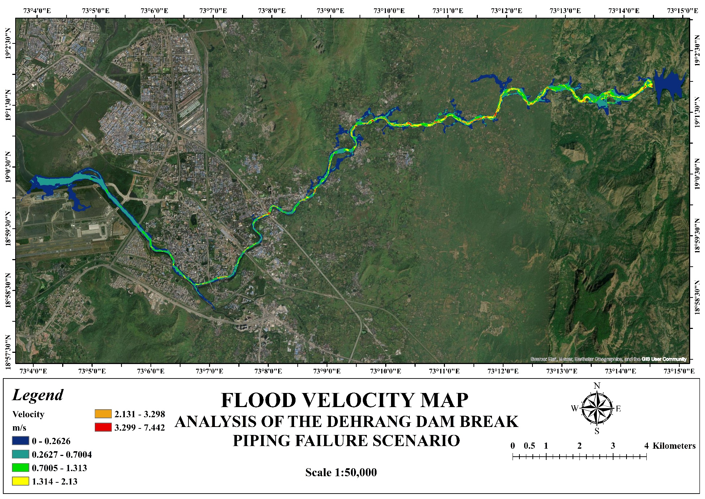
Map PI-02: Maximum Water Surface Elevation — Piping FailureMap PI-03: Maximum Flow Velocity – Piping Failure
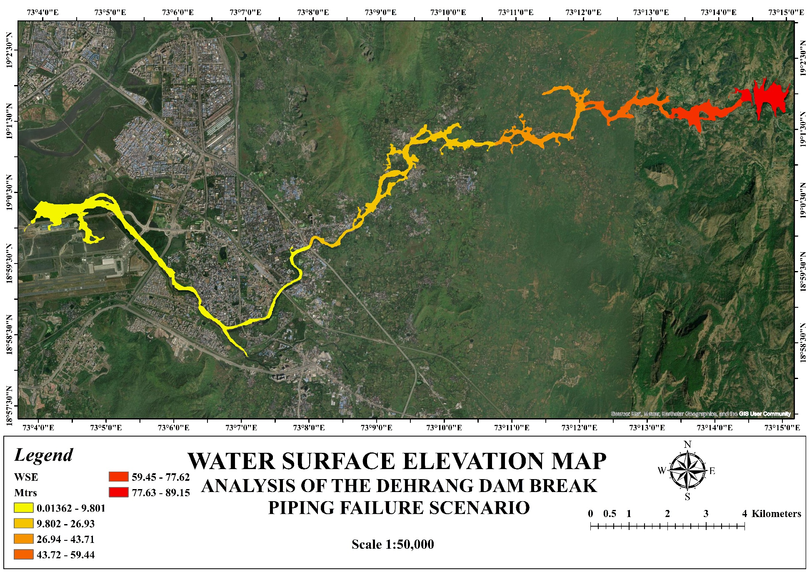
Map PI-03: Maximum Flow Velocity — Piping FailureMap PI-04: Maximum Arrival Time – Piping Failure
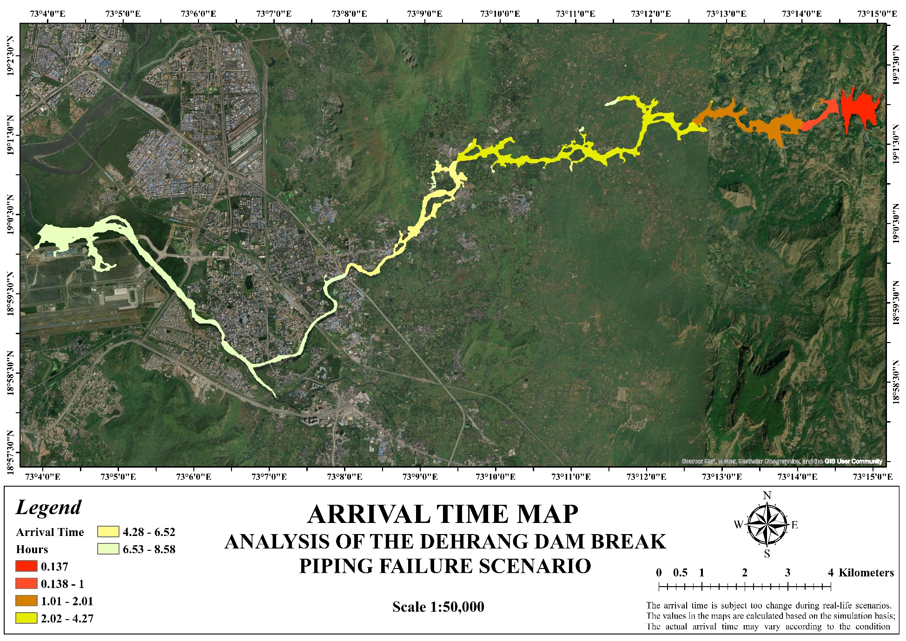
Map PI-04: Maximum Arrival Time — Piping FailureMap PI-05: Composite Hazard Classification – Piping Failure (Low / Medium / High / Extreme)
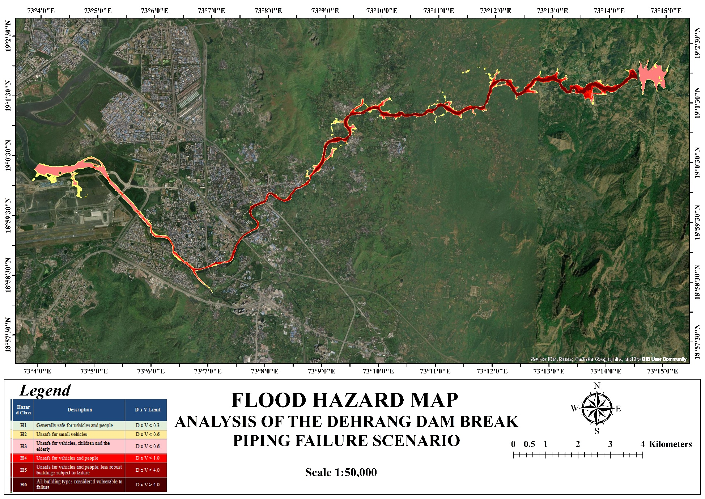
Map PI-05: Composite Hazard Classification — Piping Failure (Low / Medium / High / Extreme)The inundation maps are appended at the end of this report. Downstream settlements identified in the flood inundation envelope are to be incorporated in the Emergency Action Plan (EAP) for Dehrang Dam, currently being prepared by Panvel Municipal Corporation (PMC).